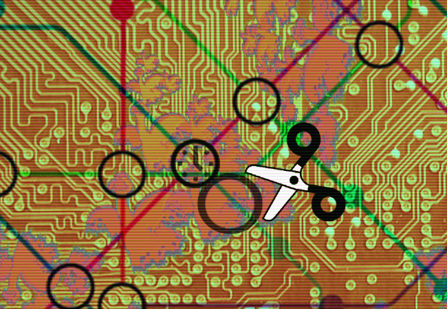

To nie może być tak trudne na jakie wygląda, prawda?
Nie namyślając się długo, chwytasz za narzędzie oznaczone parą nożyczek (bądź niewielkim sekatorem) oznaczone etykietką "PRZERWIJ PĘTLĘ". Zgodnie z zaleceniami swojego kolegi, omijasz zwinnie kursorem wszystkie fragmenty MAGII, które zdobią runiczną płytkę pięciu transformacji. Postanawiasz, że usuniesz fragment pętli CZASU. W najlepszym przypadku uruchomi się za kilka dni, a w najgorszym - może wczoraj. Drobny paradoks nikogo jeszcze nie zabił.